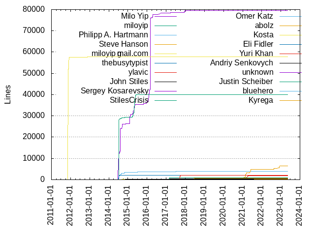
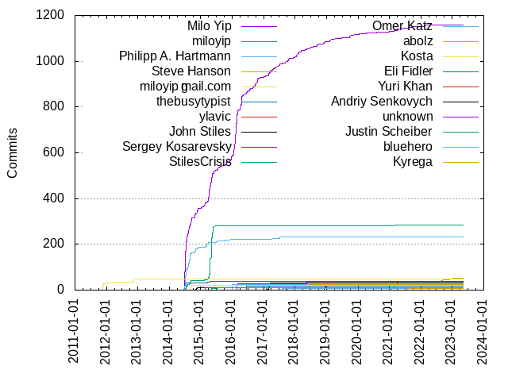

Authors
| Author | Commits (%) | + lines | - lines | First commit | Last commit | Age | Active days | # by commits |
|---|
| Milo Yip | 1160 (47.37%) | 79579 | 86646 | 2014-06-20 | 2022-04-05 | 2846 days, 20:19:15 | 432 | 1 |
| miloyip | 284 (11.60%) | 39943 | 35728 | 2014-06-29 | 2021-03-24 | 2459 days, 7:06:48 | 72 | 2 |
| Philipp A. Hartmann | 234 (9.55%) | 3886 | 18010 | 2014-02-01 | 2018-10-31 | 1733 days, 11:40:18 | 70 | 3 |
| Steve Hanson | 51 (2.08%) | 6425 | 2489 | 2021-01-12 | 2022-12-16 | 702 days, 19:11:56 | 25 | 4 |
| miloyip@gmail.com | 50 (2.04%) | 57880 | 1850 | 2011-11-18 | 2012-11-16 | 363 days, 21:31:40 | 21 | 5 |
| thebusytypist | 39 (1.59%) | 2013 | 1161 | 2014-07-06 | 2015-04-15 | 282 days, 18:53:51 | 14 | 6 |
| ylavic | 37 (1.51%) | 1886 | 533 | 2017-02-24 | 2021-04-03 | 1498 days, 23:53:16 | 21 | 7 |
| John Stiles | 34 (1.39%) | 377 | 222 | 2017-02-06 | 2018-05-11 | 458 days, 18:45:16 | 12 | 8 |
| Sergey Kosarevsky | 28 (1.14%) | 214 | 82 | 2016-02-26 | 2016-03-05 | 8 days, 1:45:40 | 5 | 9 |
| StilesCrisis | 27 (1.10%) | 840 | 211 | 2017-02-02 | 2017-03-08 | 34 days, 0:36:56 | 8 | 10 |
| Omer Katz | 26 (1.06%) | 198 | 105 | 2015-12-29 | 2015-12-31 | 2 days, 0:53:01 | 3 | 11 |
| abolz | 25 (1.02%) | 638 | 303 | 2018-06-15 | 2018-06-16 | 1 day, 5:06:07 | 2 | 12 |
| Kosta | 22 (0.90%) | 203 | 121 | 2014-09-01 | 2015-02-17 | 169 days, 0:28:04 | 4 | 13 |
| Eli Fidler | 17 (0.69%) | 117 | 116 | 2016-05-31 | 2016-06-13 | 12 days, 23:42:42 | 3 | 14 |
| Yuri Khan | 10 (0.41%) | 2118 | 726 | 2017-09-16 | 2017-09-30 | 14 days, 3:43:26 | 5 | 15 |
| Andriy Senkovych | 10 (0.41%) | 336 | 241 | 2014-11-03 | 2014-11-18 | 15 days, 2:08:45 | 4 | 16 |
| unknown | 9 (0.37%) | 65 | 28 | 2015-02-17 | 2015-02-17 | 3:15:48 | 1 | 17 |
| Justin Scheiber | 9 (0.37%) | 27 | 27 | 2015-05-05 | 2015-07-21 | 77 days, 8:16:06 | 3 | 18 |
| bluehero | 8 (0.33%) | 57 | 60 | 2016-10-17 | 2017-08-06 | 293 days, 0:14:40 | 4 | 19 |
| Kyrega | 8 (0.33%) | 205 | 55 | 2021-08-10 | 2021-08-10 | 1:56:10 | 1 | 20 |
These didn't make it to the top: Drew Noakes, Sean Leather, KaitoHH, Andrea Colaci, zhao xin, escherstair, Charles Milette, Andrii Senkovych, ecorm, Zhihao Yuan, Xuanyi Zhou, Mateusz Loskot, Lele Gaifax, Christopher Warrington, scheiber, ardb-uk, Philipp A Hartmann, Peter Kasting, MaximeBF, Matthis Thorade, Janusz Chorko, Ivan Kravets, Christian Semmler, Alejandro Martinez, Étienne Dupuis, stunney, agate-pris, SuperSodaSea, Rolf Eike Beer, Rodion Malinovsky, Patrick Cheng, Nicholas Fraser, Minmin Gong, Michael Haubenwallner, Mateusz Łoskot, Kent Ross, Hendrik Muhs, Gaspard Petit, Etienne Laurin, Andrey Glebov, yuzhaol, seky, piratf, piotr-kaminski-intel, liujiayang, jwillcox-telework, etiennebatise, bogaotory, blackball, Wenhao Liu, Tomasz Noczynski (Linux), Tom Briden, Tim Gates, Ted Lyngmo, Tall??di Mih??ly, Phyks, Oliver Hahm, Malcolm Tyrrell, M.Tayel, Leonid Terenin, Leo Mehr, Lars Klein, Jun, Johnny Shaw, Jason Smith, Harry Wong, Haffon, Erik Froseth, Captain Crutches, Andy Deng, Andrey, Albert Hung, Adam Calhoon, 仓鼠, yiteng.nyt, xpahos, xiaoPierre, supperpiccle, spacewander, sjaques, shadeware, sergey kachanovskiy, quyan, oviradoi, octal, niukuo, myd7349, mdamle, maficccc@gmail.com, luz.paz, kyb, jiapeng.wen, jedwards, jack_perisich, ioannis-e, h46incon, fuzhufang, fredgan, eisaev, clach04, Zoltan Kovago, Ziyang LI, Zhang Ye, Yuval Hager, Yu Chen Hou, Yolan Romailler, Wu Zhao, Vlad Lipskiy, Veselin Georgiev, VeekXT, TyRoXx, Tim Miller, Tana0910, Tallódi Mihály, Stephen Kelly, Silas S. Brown, Sfinktah Bungholio, Sergey Kovalevich, Sergey Fedorov, Saurabh Charde, Ryan Morris, Ruslan Bilovol, Ross Younger, Romain Moret, Romain Geissler @ Amadeus, Romain Geissler, Renny Koshy, ReadmeCritic, PhoebeHui, Pete Gadomski, Pave Pimenov, Nikolay, N. Kolotov, Mikhail Boldyrev, Michael Thon, MaxXSoft, Matthew Early, Matteo Settenvini, Martin Lindhe, Marian Klymov, Léonard Gérard, Luka Rahne, Liang ZOU, Leonard Chan, Laurent Stacul, Kurt Johnson, Krystian Chmura, Konstantin Trushin, Konstantin Käfer, Koji Kobayashi, Kevin Atkinson, Kal Conley, KLsz, Julien Courtat, Joshua Watt, Jordi Mallach, John, Jihadist, Jesse Schobben, Jean-Claude Monnin, Jarred Nicholls, Jan Wrobel, Jamie Seward, Ivan Le Lann, Igor Kostenko, IceTrailer, Ian Bell, Hartwig, Gustav, Guo Xiao, Gao Mingfei, FredGan, FrankHB, Force.Charlie-I, Florin Malita, Flaviu_, Erik Martin, Eric Rannaud, David Newman, Danil Osherov, Dan Vanderkam, Crunkle, Cory Omand, Clemens Arth, Christian Hitz, Chris Lundquist, Chocobo1, Bruce Stephens, BennyYip, Benjamin Lee, Bas Couwenberg, Bart Muzzin, Anton Indrawan, Andrew, Adam Mitz, Adam Majer, (no author)
Only top 20 authors shown
Only top 20 authors shown
| Month | Author | Commits (%) | Next top 5 | Number of authors |
|---|
| 2023-05 | Leonard Chan | 1 (50.00% of 2) | Albert Hung | 2 |
| 2023-04 | Flaviu_ | 1 (50.00% of 2) | Albert Hung | 2 |
| 2023-03 | Sergey Fedorov | 1 (100.00% of 1) | | 1 |
| 2023-01 | supperpiccle | 1 (50.00% of 2) | Tana0910 | 2 |
| 2022-12 | Steve Hanson | 4 (100.00% of 4) | | 1 |
| 2022-11 | Steve Hanson | 3 (75.00% of 4) | Kent Ross | 2 |
| 2022-10 | Steve Hanson | 1 (100.00% of 1) | | 1 |
| 2022-09 | Jihadist | 1 (100.00% of 1) | | 1 |
| 2022-08 | jwillcox-telework | 2 (100.00% of 2) | | 1 |
| 2022-07 | Tim Gates | 1 (100.00% of 1) | | 1 |
| 2022-05 | Peter Kasting | 4 (57.14% of 7) | Tom Briden, Johnny Shaw | 3 |
| 2022-04 | Milo Yip | 2 (40.00% of 5) | Leonid Terenin, Johnny Shaw | 3 |
| 2022-03 | agate-pris | 3 (42.86% of 7) | Milo Yip, Kent Ross | 3 |
| 2022-02 | Milo Yip | 3 (60.00% of 5) | Adam Calhoon | 2 |
| 2021-11 | Milo Yip | 1 (50.00% of 2) | Malcolm Tyrrell | 2 |
| 2021-10 | ardb-uk | 4 (50.00% of 8) | Milo Yip, jedwards, Ivan Le Lann | 4 |
| 2021-09 | Steve Hanson | 2 (40.00% of 5) | Milo Yip, Andrew | 3 |
| 2021-08 | Kyrega | 8 (72.73% of 11) | Milo Yip, Steve Hanson | 3 |
| 2021-07 | Steve Hanson | 3 (60.00% of 5) | jack_perisich, Milo Yip | 3 |
| 2021-06 | Steve Hanson | 10 (83.33% of 12) | Milo Yip | 2 |
| 2021-05 | Steve Hanson | 4 (50.00% of 8) | Milo Yip, Saurabh Charde, N. Kolotov | 4 |
| 2021-04 | ylavic | 6 (46.15% of 13) | Milo Yip, Hendrik Muhs | 3 |
| 2021-03 | ylavic | 10 (47.62% of 21) | Steve Hanson, Milo Yip, miloyip | 4 |
| 2021-02 | Steve Hanson | 8 (61.54% of 13) | Milo Yip, Laurent Stacul | 3 |
| 2021-01 | Steve Hanson | 9 (81.82% of 11) | Milo Yip, Krystian Chmura | 3 |
| 2020-12 | Xuanyi Zhou | 5 (71.43% of 7) | Milo Yip | 2 |
| 2020-10 | Silas S. Brown | 1 (50.00% of 2) | Milo Yip | 2 |
| 2020-09 | Pave Pimenov | 1 (100.00% of 1) | | 1 |
| 2020-08 | escherstair | 6 (85.71% of 7) | Milo Yip | 2 |
| 2020-07 | Lars Klein | 2 (66.67% of 3) | Milo Yip | 2 |
| 2020-06 | Milo Yip | 1 (50.00% of 2) | Gaspard Petit | 2 |
| 2020-05 | Milo Yip | 1 (50.00% of 2) | Gustav | 2 |
| 2020-04 | Milo Yip | 1 (50.00% of 2) | Gao Mingfei | 2 |
| 2020-03 | Milo Yip | 2 (22.22% of 9) | Jun, 仓鼠, ioannis-e, Romain Geissler @ Amadeus, Nikolay | 7 |
| 2020-02 | xpahos | 1 (33.33% of 3) | mdamle, Tim Gates | 3 |
| 2020-01 | PhoebeHui | 1 (50.00% of 2) | Milo Yip | 2 |
| 2019-12 | Milo Yip | 2 (66.67% of 3) | Joshua Watt | 2 |
| 2019-11 | piratf | 2 (50.00% of 4) | Milo Yip | 2 |
| 2019-10 | Milo Yip | 5 (62.50% of 8) | fredgan, VeekXT, Charles Milette | 4 |
| 2019-09 | zhao xin | 6 (35.29% of 17) | Milo Yip, Etienne Laurin, Ross Younger, Eric Rannaud | 5 |
| 2019-08 | Milo Yip | 1 (50.00% of 2) | Mikhail Boldyrev | 2 |
| 2019-07 | Charles Milette | 5 (83.33% of 6) | FredGan | 2 |
| 2019-06 | Renny Koshy | 1 (50.00% of 2) | Milo Yip | 2 |
| 2019-05 | Milo Yip | 1 (100.00% of 1) | | 1 |
| 2019-04 | ylavic | 5 (35.71% of 14) | Milo Yip, quyan, eisaev, MaxXSoft, Malcolm Tyrrell | 7 |
| 2019-03 | Milo Yip | 2 (66.67% of 3) | Luka Rahne | 2 |
| 2019-02 | Milo Yip | 9 (81.82% of 11) | Gaspard Petit | 2 |
| 2019-01 | ylavic | 1 (33.33% of 3) | Ruslan Bilovol, Léonard Gérard | 3 |
| 2018-12 | ylavic | 14 (58.33% of 24) | Milo Yip, seky | 3 |
| 2018-11 | Milo Yip | 2 (66.67% of 3) | Jean-Claude Monnin | 2 |
| 2018-10 | Yuval Hager | 1 (25.00% of 4) | Philipp A. Hartmann, Milo Yip, Lele Gaifax | 4 |
| 2018-09 | Milo Yip | 9 (81.82% of 11) | jiapeng.wen, Julien Courtat | 3 |
| 2018-08 | Lele Gaifax | 3 (75.00% of 4) | Milo Yip | 2 |
| 2018-07 | Milo Yip | 6 (33.33% of 18) | Philipp A Hartmann, Minmin Gong, Yolan Romailler, Veselin Georgiev, Tim Miller | 9 |
| 2018-06 | abolz | 25 (71.43% of 35) | Milo Yip, bogaotory, Marian Klymov, Christopher Warrington, Benjamin Lee | 6 |
| 2018-05 | John Stiles | 4 (50.00% of 8) | Milo Yip, Sergey Kovalevich, Florin Malita | 4 |
| 2018-04 | Milo Yip | 3 (50.00% of 6) | Zoltan Kovago, Stephen Kelly, Ryan Morris | 4 |
| 2018-03 | Milo Yip | 7 (36.84% of 19) | MaximeBF, Christian Semmler, sergey kachanovskiy, maficccc@gmail.com, KLsz | 7 |
| 2018-02 | Milo Yip | 10 (83.33% of 12) | luz.paz, Romain Geissler | 3 |
| 2018-01 | Milo Yip | 13 (92.86% of 14) | xiaoPierre | 2 |
| 2017-12 | Milo Yip | 5 (35.71% of 14) | Matthis Thorade, Haffon, sjaques, Philipp A. Hartmann, Lele Gaifax | 6 |
| 2017-11 | Rolf Eike Beer | 3 (42.86% of 7) | Étienne Dupuis, Milo Yip, Martin Lindhe | 4 |
| 2017-10 | Milo Yip | 12 (54.55% of 22) | piotr-kaminski-intel, M.Tayel, Captain Crutches, Étienne Dupuis, h46incon | 8 |
| 2017-09 | Yuri Khan | 10 (32.26% of 31) | Milo Yip, KaitoHH, Christopher Warrington, Crunkle | 5 |
| 2017-08 | bluehero | 7 (77.78% of 9) | Minmin Gong, Milo Yip | 3 |
| 2017-07 | Milo Yip | 9 (56.25% of 16) | Philipp A. Hartmann, Bart Muzzin | 3 |
| 2017-06 | Milo Yip | 5 (55.56% of 9) | Leo Mehr, kyb, Chocobo1 | 4 |
| 2017-05 | Milo Yip | 9 (56.25% of 16) | Tomasz Noczynski (Linux), Philipp A. Hartmann, Harry Wong, Hartwig | 5 |
| 2017-04 | Milo Yip | 7 (53.85% of 13) | Oliver Hahm, Zhihao Yuan, Philipp A. Hartmann, Matthew Early, Alejandro Martinez | 6 |
| 2017-03 | John Stiles | 24 (48.98% of 49) | Milo Yip, StilesCrisis, Alejandro Martinez, Ted Lyngmo, shadeware | 8 |
| 2017-02 | StilesCrisis | 24 (58.54% of 41) | Milo Yip, John Stiles, ylavic, oviradoi | 5 |
| 2017-01 | Milo Yip | 4 (80.00% of 5) | Zhihao Yuan | 2 |
| 2016-12 | Milo Yip | 4 (44.44% of 9) | Andrey Glebov, SuperSodaSea | 3 |
| 2016-11 | Milo Yip | 4 (66.67% of 6) | SuperSodaSea, Ivan Kravets | 3 |
| 2016-10 | Milo Yip | 27 (90.00% of 30) | bluehero, Yu Chen Hou, Wu Zhao | 4 |
| 2016-09 | Milo Yip | 12 (52.17% of 23) | Patrick Cheng, Tall??di Mih??ly, myd7349, Tallódi Mihály, Sfinktah Bungholio | 9 |
| 2016-08 | Milo Yip | 6 (60.00% of 10) | Janusz Chorko, niukuo, Jordi Mallach | 4 |
| 2016-07 | Milo Yip | 12 (75.00% of 16) | yiteng.nyt, fuzhufang, Jason Smith, Jamie Seward | 5 |
| 2016-06 | Milo Yip | 13 (61.90% of 21) | Philipp A. Hartmann, Eli Fidler, Andy Deng, Zhang Ye, Jason Smith | 6 |
| 2016-05 | Eli Fidler | 15 (48.39% of 31) | Andrea Colaci, Milo Yip, liujiayang, Vlad Lipskiy, Michael Thon | 6 |
| 2016-04 | Milo Yip | 58 (96.67% of 60) | Dan Vanderkam, Bruce Stephens | 3 |
| 2016-03 | Milo Yip | 26 (68.42% of 38) | Sergey Kosarevsky, Nicholas Fraser, Konstantin Trushin, Jarred Nicholls, Cory Omand | 7 |
| 2016-02 | Milo Yip | 126 (82.35% of 153) | Sergey Kosarevsky, octal, Kevin Atkinson, Jesse Schobben, Ian Bell | 6 |
| 2016-01 | Milo Yip | 53 (98.15% of 54) | ReadmeCritic | 2 |
| 2015-12 | Omer Katz | 26 (52.00% of 50) | Milo Yip, miloyip, Philipp A. Hartmann | 4 |
| 2015-11 | Milo Yip | 7 (46.67% of 15) | Philipp A. Hartmann, Michael Haubenwallner, Wenhao Liu | 4 |
| 2015-10 | Milo Yip | 12 (52.17% of 23) | stunney, etiennebatise, Philipp A. Hartmann, Andrey, Sean Leather | 7 |
| 2015-09 | Rodion Malinovsky | 3 (50.00% of 6) | Milo Yip, Kurt Johnson | 3 |
| 2015-08 | Milo Yip | 10 (58.82% of 17) | Ivan Kravets, blackball, Ziyang LI, Philipp A. Hartmann, Force.Charlie-I | 6 |
| 2015-07 | Milo Yip | 11 (37.93% of 29) | Philipp A. Hartmann, scheiber, yuzhaol, Mateusz Łoskot, Mateusz Loskot | 9 |
| 2015-06 | Milo Yip | 8 (40.00% of 20) | miloyip, Mateusz Loskot, Mateusz Łoskot, Justin Scheiber | 5 |
| 2015-05 | miloyip | 134 (70.16% of 191) | Milo Yip, Justin Scheiber, Phyks, Kal Conley, Igor Kostenko | 6 |
| 2015-04 | miloyip | 90 (49.18% of 183) | Milo Yip, thebusytypist, Philipp A. Hartmann, Guo Xiao, Danil Osherov | 8 |
| 2015-03 | Philipp A. Hartmann | 12 (44.44% of 27) | Milo Yip, miloyip, thebusytypist | 4 |
| 2015-02 | Milo Yip | 19 (39.58% of 48) | unknown, Drew Noakes, Andrii Senkovych, Philipp A. Hartmann, miloyip | 9 |
| 2015-01 | Milo Yip | 7 (70.00% of 10) | Philipp A. Hartmann, Erik Martin, Drew Noakes | 4 |
| 2014-12 | Philipp A. Hartmann | 2 (50.00% of 4) | Milo Yip | 2 |
| 2014-11 | Milo Yip | 22 (51.16% of 43) | Philipp A. Hartmann, Andriy Senkovych, Anton Indrawan | 4 |
| 2014-10 | Milo Yip | 18 (38.30% of 47) | Philipp A. Hartmann, Sean Leather, ecorm, Zhihao Yuan, Drew Noakes | 8 |
| 2014-09 | Milo Yip | 31 (43.66% of 71) | Kosta, miloyip, Philipp A. Hartmann, TyRoXx, Pete Gadomski | 7 |
| 2014-08 | Philipp A. Hartmann | 58 (55.24% of 105) | Milo Yip, miloyip, Jan Wrobel | 4 |
| 2014-07 | Milo Yip | 164 (54.85% of 299) | Philipp A. Hartmann, thebusytypist, miloyip | 4 |
| 2014-06 | Milo Yip | 81 (92.05% of 88) | Philipp A. Hartmann, miloyip | 3 |
| 2014-04 | Philipp A. Hartmann | 2 (100.00% of 2) | | 1 |
| 2014-03 | Philipp A. Hartmann | 1 (100.00% of 1) | | 1 |
| 2014-02 | Philipp A. Hartmann | 11 (100.00% of 11) | | 1 |
| 2012-11 | miloyip@gmail.com | 17 (100.00% of 17) | | 1 |
| 2012-03 | miloyip@gmail.com | 1 (100.00% of 1) | | 1 |
| 2012-02 | miloyip@gmail.com | 3 (100.00% of 3) | | 1 |
| 2011-12 | miloyip@gmail.com | 7 (100.00% of 7) | | 1 |
| 2011-11 | miloyip@gmail.com | 22 (95.65% of 23) | (no author) | 2 |
| Year | Author | Commits (%) | Next top 5 | Number of authors |
|---|
| 2023 | Albert Hung | 2 (28.57% of 7) | supperpiccle, Tana0910, Sergey Fedorov, Leonard Chan, Flaviu_ | 6 |
| 2022 | Steve Hanson | 8 (21.62% of 37) | Milo Yip, Peter Kasting, agate-pris, Kent Ross, jwillcox-telework | 12 |
| 2021 | Steve Hanson | 43 (39.45% of 109) | Milo Yip, ylavic, Kyrega, ardb-uk, Hendrik Muhs | 16 |
| 2020 | Milo Yip | 11 (27.50% of 40) | escherstair, Xuanyi Zhou, Lars Klein, Jun, 仓鼠 | 19 |
| 2019 | Milo Yip | 33 (44.59% of 74) | zhao xin, ylavic, Charles Milette, Etienne Laurin, piratf | 23 |
| 2018 | Milo Yip | 67 (42.41% of 158) | abolz, ylavic, Philipp A Hartmann, MaximeBF, Lele Gaifax | 37 |
| 2017 | Milo Yip | 85 (36.64% of 232) | John Stiles, StilesCrisis, Yuri Khan, Philipp A. Hartmann, bluehero | 40 |
| 2016 | Milo Yip | 346 (76.72% of 451) | Sergey Kosarevsky, Eli Fidler, Andrea Colaci, SuperSodaSea, Patrick Cheng | 43 |
| 2015 | miloyip | 239 (38.61% of 619) | Milo Yip, Philipp A. Hartmann, Omer Katz, unknown, Justin Scheiber | 37 |
| 2014 | Milo Yip | 358 (53.35% of 671) | Philipp A. Hartmann, miloyip, thebusytypist, Kosta, Andriy Senkovych | 16 |
| 2012 | miloyip@gmail.com | 21 (100.00% of 21) | | 1 |
| 2011 | miloyip@gmail.com | 29 (96.67% of 30) | (no author) | 2 |
| Domains | Total (%) |
|---|
| gmail.com | 1711 (69.87%) |
|---|
| qo.cx | 233 (9.51%) |
|---|
| uk.ibm.com | 51 (2.08%) |
|---|
| c5894555-1306-4e8d-425f-1f6f381ee07c | 51 (2.08%) |
|---|
| users.noreply.github.com | 32 (1.31%) |
|---|
| linderdaum.com | 28 (1.14%) |
|---|
| John-Stiles-iMac.local | 27 (1.10%) |
|---|
| googlemail.com | 25 (1.02%) |
|---|
| autodesk.com | 22 (0.90%) |
|---|
| topologyinc.com | 17 (0.69%) |
|---|